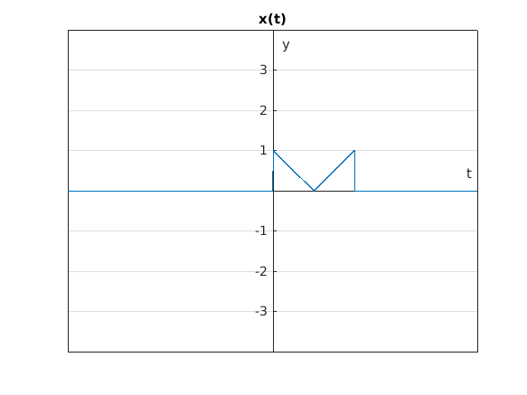

Práctica 4: Convolución y Correlación
integrantes: Gómez García Carlos Eduardo Contreras Porfirio Alejandro Gómez Serrano Eric
Contents
Objetivos
- Conocer métodos básicos de integración numérica
- Manipulación de instrucciones en MATLAB
- Simular convoluciones y correlaciones de señales continuas
Introducción
Teorema fundamental del cálculo
PR04 problema 1
t = -10:0.001:10; x = @(t) ((t>=0).*(1-t).*(t<=1)+(t>1).*(t-1).*(t<=2)); h = @(t) heaviside(t)-heaviside(t-1); c = @(t) (t>0).*(t-(t.^2)/2).*(t<=1)+(t>1).*(t.^2-3.*t+5/2).*(t<=2)+(t>2).*(-t.^2/2+2.*t-3/2).*(t<=3); %grafica2d(t,c(t),'c(t)'); % convconm(x,h,c);
PR04 problema 3
x = @(t) (t<=0).*(0)+(t>0).*(t).*(t<=1)+(t>1).*(1).*(t<=2); h = @(t) (t<=1).*(0)+(t>1).*(1).*(t<=3)+(t>3).*(0); c = @(t) (t>1).*((t.^2)/2-t+1/2).*(t<=2)+(t>2).*((2.*t+1)/2-2).*(t<=3)+(t>3).*((-t.^2+6.*t-8)/2+1).*(t<=4)+(t>4).*(-t+5).*(t<=5); % grafica2d(t,c(t),'c(t)') % grafica2d(t,h(t),'x(t)') % convconm(x,h,c);
PR06 problema e)
x = @(t) heaviside(t)-2*heaviside(t-3)+heaviside(t-4);
h = @(t) heaviside(t)-2*heaviside(t-3)+heaviside(t-4);
c = @(t) (t>3).*(-4+t).*(t<4)+(t>1).*(2-t).*(t<3)+(t>0).*(-3.*t+4).*(t<1)+(t>-1).*(3.*t+4).*(t<0)+(t>-3).*(t+2).*(t<-1)+(t>-4).*(-4-t).*(t<-3);
% grafica2d(t,c(t),'c(t)')
convconm(x,h,c);
 PR06 problema f)
h = @(t) heaviside(t)-2.*heaviside(t-2)+heaviside(t-4); x = @(t) heaviside(t)-2.*heaviside(t-3)+heaviside(t-4); % la c no coincide con la simulacion %c = @(t) (t>3).*(-4+t).*(t<4)+(t>1).*(2-t).*(t<3)+(t>0).*(-3.*t+4).*(t<1)+(t>-1).*(3.*t+4).*(t<0)+(t>-3).*(t+2).*(t<-1)+(t>-4).*(-4-t).*(t<-3); %convconm(x,h,c);